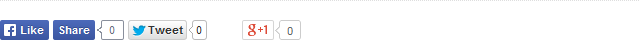

LeatherDiary 1.3 Documentation by Tomas Toman
LeatherDiary
Created: 04/02/2014
By: Tomas Toman
Web: www.tomastoman.cz
First of all, I would like to thank you for choosing LeatherDiary! I firmly believe that you will be satisfied with the product. In case of any problems or doubts you can use the LeatherDiary Official Support (in English, German or Czech).
Thanks so much!
Navigation
- About LeatherDiary
- Theme installation
- Theme options
- General settings
- Homepage settings
- Colors (only in Premium Version available)
- Fonts
- Social networking
- Other settings
- Background and Header settings
- Widget areas
- Right Sidebar widget area
- Footer widget areas
- Footer notices
- Homepage slideshow (only in Premium Version available)
- Homepage posts
- Custom widgets
- LeatherDiary Homepage Widgets
- LeatherDiary Social Widget (only in Premium Version available)
- LeatherDiary Facebook Like Box Widget (only in Premium Version available)
- LeatherDiary Twitter Widget (only in Premium Version available)
- LeatherDiary Tab Widget (only in Premium Version available)
- Menu areas
- Page templates
- Sitemap page (only in Premium Version available)
- Full-width page
- Page without Breadcrumb Navigation
- Page without Comments
- Page without Title
- Logged In page
- Landing page
- Full-width page without Title
- Plugins
- Breadcrumb Navigation plugin
- Sitemap plugin (only in Premium Version available)
- Slideshow plugin (only in Premium Version available)
- Custom Shortcodes
- Translations
- FAQs about WordPress
A) About LeatherDiary - top
LeatherDiary is an easily customizable WordPress multipurpose theme. It is a fully responsive theme that allows for easy viewing on any device. Write your online book of Life with LeatherDiary theme! Using Theme Options panel, you can customize this theme directly to your needs. LeatherDiary is fully compatible with the popular WooCommerce plugin.
LeatherDiary Features
- HTML5/CSS3 support
- Responzive design
- Intuitive Theme Options panel
- WooCommerce 2.1+ ready
- Integrated Drag-and-drop Page Builder with 35 default widgets for creating custom page templates (only in Premium Version available)
- 14 pre-defined color schemes (7 in Free Version)
- 2 pre-defined background patterns (Dark and Light)
- Unlimited main background settings (pre-defined pattern/custom image/one color)
- Unlimited ability to create custom color schemes (only in Premium Version available)
- Selection from 220 Google fonts for individual headlines and text passages
- Select between displaying the page on the left or in the middle of the browser window
- Select between viewing with or without right sidebar
- Select between displaying Logo/Site Title in header
- Widgetized homepage with possibility to display the latest posts from the specific categories
- Custom Header image
- Ability to set different Header Images for individual pages (only in Premium Version available)
- Homepage slideshow (only in Premium Version available)
- Breadcrumb navigation
- 2 menu areas (horizontal and vertical) with unlimited levels of drop-down submenus
- Scroll-top button
- Sidebar and Footer widget areas
- 5 Custom widgets for displaying the latest posts from the specific categories on the homepage (1 in Free Version)
- Custom Tab Widget (displays popular posts, recent posts, comments and tags in tabbed format) (only in Premium Version available)
- Social networking Custom widget (only in Premium Version available)
- Facebook Like Box Custom widget (only in Premium Version available)
- Twitter Following Custom widget (only in Premium Version available)
- Integrated Facebook/Twitter/Google +1 sharing buttons (only in Premium Version available)
- Integrated automatic Sitemap generator with advanced options (only in Premium Version available)
- Sitemap (only in Premium Version available) and Full-width custom page templates
- Options for single posts/pages displaying
- Related posts box (only in Premium Version available)
- Custom shortcodes for displaying buttons, tables (only in Premium Version available), highlighted text and images anywhere you like
- Custom shortcodes for displaying a listing of posts anywhere you like (only in Premium Version available)
- Custom shortcode for displaying Google maps (only in Premium Version available)
- Easily add your own logo in header
- Easily add your own favicon
- Easily add custom CSS
- Ready for translation into your language (.pot file integrated)
- Integrated Czech, Danish, Dutch, French, German, Greek, Italian, Polish, Russian, Slovak and Spanish language localization
- RTL languages supported
Compatible Browsers: Internet Explorer 8+, Google Chrome, Mozilla Firefox, Opera, Safari
Compatible WordPress Versions: 3.5+
B) Theme installation - top
For LeatherDiary installation, you must follow these basic steps:
- Extract the folder "leatherdiary.zip".
- Using FTP client (for example Total Commander) upload the extracted folder "leatherdiary" to "wp-content/themes" directory on your host web server.
- Log in to your WordPress administration.
- Select the "Appearance => Themes" panel.
- Click on the link "Activate" at the LeatherDiary theme.
Alternatively, you can install this theme via your WordPress administration. Go to “Appearance > Themes” panel and using “Install Themes” tool upload the original ZIP file. After uploading, activate the theme.
1. Update to Premium Version
Once you have purchased LeatherDiary Premium Version, simply delete the "leatherdiary" folder in "wp-content/themes" directory on your host web server and replace it by extracted folder that you have got by purchasing LeatherDiary Premium Version.
Or, if the previous described procedure will not be comfortable for you, go to “Appearance > Themes” panel in your WordPress administration and using “Install Themes” tool upload the ZIP file which you got by purchasing LeatherDiary Premium Version. Before this, you should delete the original Free Version of this theme, if you have installed it (but it is not necessary).
C) Theme options - top
The options framework is available through the link "Theme Options" located on the upper horizontal admin bar (or via panel "Appearance => Theme Options").
1. General settings
This tab is used for choosing one of the basic color schemes and setting the main parts of layout (header, right sidebar, footer, favicon).
You can find here the single posts/pages displaying options, too. You can set if you want to display the related posts, featured images, dates, categories, tags and authors on individual posts.
2. Homepage settings
There are 2 options for displaying your homepage. You can set them in "Settings > Reading" panel in your WordPress administration:
1. Your latest posts
2. A static page
By default, the latest posts from all the categories are displayed on your homepage. LeatherDiary theme allows to display the latest posts from the specific categories. This is done by the LeatherDiary Homepage Widgets. You can choose from 5 different LeatherDiary Homepage Widgets:
1. LeatherDiary Homepage Column-Posts
2. LeatherDiary Homepage Default-Posts
3. LeatherDiary Homepage List-Posts
4. LeatherDiary Homepage Slider-Posts
5. LeatherDiary Homepage Thumbnail-Posts
The individual widgets differ in the way how the latest posts are displayed. In the Free version is available only LeatherDiary Homepage Default-Posts widget.
For displaying boxes with the latest posts from a specific category, go to "Appearance > Widgets" settings. Insert as many LeatherDiary Homepage Widgets as you want into "Homepage posts" widget section.
LeatherDiary also allows displaying a slideshow on the homepage. For displaying a Slideshow at the top of your homepage, the Cyclone Slider 2 plugin has to be installed. For creating a new Slideshow, go to the Cyclone Slider settings. After creating the Slideshow, go to the Widgets settings. Insert one Cyclone Slider Widget into "Homepage slideshow" widget section and select the desired Slideshow from a drop-down list. (only in Premium Version available)
3. Colors (only in Premium Version available)
This tab is used for setting your own color scheme. You can choose here the colors of individual parts of layout, headlines and texts. Using color pickers, you can easily choose exactly that color you want. You can also directly enter the hexadecimal code of your favorite color.
Tip: If you want to use the same color for more items, simply copy and paste its hexadecimal code instead of setting it using color pickers on each item.
Color settings panel
4. Fonts
This tab is used for selecting Google fonts for individual headlines and text areas. LeatherDiary offers more than 200 fonts for choosing. The default fonts are specified in the main stylesheet file (style.css in the main theme folder).
In Premium version, you also can set the font-size of individual headlines and text areas.
5. Social networking
On this tab, you can choose wheter to display or not the Facebook, Twitter and Google +1 sharing buttons which may appear below your single posts/pages content. (only in Premium Version available)
There also are fields for URL addresses of your social networking profiles and RSS, which will display the icon-links in header.
Social networking panel
6. Other settings
On this tab, you can fill your own cascading style sheet information (CSS) for modifying the layout. So you do not have to write your custom CSS straight into the file style.css in the main theme folder. The CSS information defined on this tab appear in the "head" section of source code.
Above the Custom CSS field, there are also links for editing widgets, slideshows, header image, main background and menus.
D) Background and Header settings - top
1. Main Background settings
In the main page background, you can display your custom image or one selected color.
For setting your own background image or color, go to "Appearance > Background" panel. Upload your own photography and set here all the background-image settings (position, repeating, attachment). For setting one-color background, use the color picker at the bottom of this page. To make the selected color visible, there SHOULD NOT be set any background image.
2. Header Image settings
For setting your custom header image, go to "Appearance > Header" panel and upload or select your own image. Your images should be at least 810 pixels wide. Suggested width is 810 pixels.
The options for Logo/Site Title displaying are located in "Theme Options > General Settings > Header Options".
In Premium Version, you can set the slideshow to display on your homepage instead of a static image.
E) Widget areas - top
There are several areas for displaying widgets in LeatherDiary Theme:
- Right Sidebar widget area
- Footer widget areas
- Footer copyright notices
- Homepage slideshow
- Homepage posts
The Widget panel is located in "Appearance => Widgets" section. If you want to place a widget in some of that areas, simply drag its panel and drop it to the area where you want to display the widget.
1. Right Sidebar widget area
Right Sidebar widget area displays in the right sidebar on all your pages and posts. Its name in "Appearance => Widgets" panel is "Right Sidebar". You can put here as many widgets as you want.
2. Footer widget areas
Footer widget area displays in the footer as the 3 columns of widgets. In "Appearance => Widgets" panel, you can see 3 areas for individual columns: "Footer left widget area", "Footer middle widget area" and "Footer right widget area". This boxes represent those 3 columns. You can put as many widgets as you want on each column.
3. Footer copyright notices
The widget area for copyright and other notices displays in the footer, below the main Footer widget area (described above). Its name in "Appearance => Widgets" panel is "Footer notices". Put here one "Text" widget. Into the content field of this widget fill the text (or HTML code) you want to display here. The "Title" field of this Text widget should stay empty.
4. Homepage slideshow (only in Premium Version available)
The widget area for displaying Home page slideshow is reserved for one "Cyclone Slider Widget". Its name in "Appearance => Widgets" panel is "Homepage slideshow". Put here one "Cyclone Slider Widget" and choose the slideshow you want to display on your homepage.
For making this feature available, the Cyclone Slider 2 plugin has to be installed. For creating a new Slideshow, go to the "Cyclone Slider" settings in your WordPress administration. After creating the Slideshow, go to the Widgets settings and follow the steps described above.
5. Homepage posts
LeatherDiary theme allows to display the latest posts from the specific categories. This is done by the LeatherDiary Homepage Widgets. You can choose from 5 different LeatherDiary Homepage Widgets to insert into "Homepage posts" widget area. The individual widgets differ in the way how the latest posts are displayed (described in detail in Custom widgets paragraph).
F) Custom widgets - top
LeatherDiary Theme offers 9 custom widgets altogether:
- 5 LeatherDiary Homepage Widgets (1 in Free Version)
- LeatherDiary Social Widget
- LeatherDiary Facebook Like Box Widget
- LeatherDiary Twitter Widget
- LeatherDiary Tab Widget
1. LeatherDiary Homepage Widgets
LeatherDiary Homepage Widgets allows to display the latest posts from the specific categories on your homepage. You can choose from 5 different LeatherDiary Homepage Widgets (in Free Version is available only the LeatherDiary Homepage Default-Posts widget):
- LeatherDiary Homepage Column-Posts (displays the latest posts from the selected category as a column with highlighted first post)
- LeatherDiary Homepage Default-Posts (displays the latest posts from the selected category in the default manner)
- LeatherDiary Homepage List-Posts (displays the latest posts from the selected category as an unordered list with highlighted first post)
- LeatherDiary Homepage Slider-Posts (displays the latest posts from the selected category as a horizontal slider)
- LeatherDiary Homepage Thumbnail-Posts (displays the latest posts from the selected category as the thumbnails)
For using these widgets, go to "Appearance > Widgets" settings. Insert as many LeatherDiary Homepage Widgets as you want into "Homepage posts" widget section.
Note: LeatherDiary Homepage Widgets are designed ONLY for putting into "Homepage posts" widget area, not for the other widget areas.
Boxes created by the LeatherDiary Homepage Widgets
2. LeatherDiary Social Widget (only in Premium Version available)
This widget is ready to use for displaying icons with links to your profiles on social networks and RSS feed. Put LeatherDiary Social Widget into Sidebar or Footer widget area in "Appearance => Widgets" panel and fill requested URL addresses. These social networks and services are supported:
- Google+
- Youtube
- Delicious
- Flickr
- RSS
3. LeatherDiary Facebook Like Box Widget (only in Premium Version available)
This widget is ready to use for displaying Facebook Like Box. The Like Box is a special version of the Like Button designed only for Facebook Pages. Using this widget, you can easily promote your Facebook page on your website.
Put LeatherDiary Facebook Like Box Widget into Sidebar or Footer widget area in "Appearance => Widgets" panel and fill the full URL of your Facebook Page that will be liked. Then set a height of Like Box and specify whether to display the profile photos of people who like the Page and a stream of the latest posts by the Page.
4. LeatherDiary Twitter Widget (only in Premium Version available)
This widget is ready to use for displaying Twitter Follow button. Put LeatherDiary Twitter Widget into Sidebar or Footer widget area in "Appearance => Widgets" panel and fill the Twitter username you want to display via Twitter Follow button.
5. LeatherDiary Tab Widget (only in Premium Version available)
This widget is ready for displaying the popular posts, recent posts, comments and tags in tabbed format in your sidebar.
G) Menu areas - top
In LeatherDiary theme, there are 2 areas for displaying menus:
- Vertical Fixed menu with unlimited levels of drop-down submenus
- Horizontal Top Header menu with unlimited levels of drop-down submenus
Menu settings panel is located in "Appearance => Menus". At first create a new menu and assign it to one of two pre-defined Menu areas. Then in left panels choose required pages/categories or custom links and add them to your new Menu. Then save all changes.
If you want to create a submenu, just drag required menu item and move it more to the right against its parent item. When you drop your sub-item, it should stay with indentation against the parent item. This way you can create unlimited levels of submenus.
By default, the Fixed menu is displaying at fixed position on the right of the main content area. In "Theme Options > General Settings", you also can give the absolute position for this menu or you can hide the whole box.

Example of three-levels menu
H) Page templates - top
Beside Default Template, LeatherDiary Free Version offers 7 other custom Page templates. If you create a new page or edit some existing page, you can choose the Page template in "Page Attributes => Template" right panel.
1. Sitemap page (only in Premium Version available)
"Sitemap" Page template is ready for displaying your sitemap page. If you want to use it, the Dagon Design Sitemap Generator plugin must be activated. The sitemap options can be edited on "Settings => DDSitemapGen" panel.
2. Full-width page (without right sidebar)
If you want to display only some pages without the main right sidebar, simply use this template for these pages.
3. Page without Breadcrumb Navigation
If you want to hide the Breadcrumb Navigation only on some pages, simply use this template for these pages.
4. Page without Comments
This template hides the whole Comments area (even if the comments are allowed for this page).
5. Page without Title
This template displays only the page Content without the page Title.
6. Logged In
This template displays the page content only for logged-in users (otherwise it displays only the Log-in form).
7. Landing Page
This template displays only the page content without menus, right sidebar, comments area and footer widget areas. You can use it for creating a temporary home page before your website will be ready for the public launch.
8. Full-width page without Title
This template displays the page in the same way as the "Full-width" template, but it will not display the page title.
I) Plugins - top
Some functions of LeatherDiary are conditioned by installing some plugins. The recommended plugins are included in the installation folder of LeatherDiary (folder "plugins"). If some of the recommended plugins are inactive, you can see them in "Appearance => Install Plugins" panel.
List of recommended plugins:
- Breadcrumb Navigation plugin - Breadcrumb NavXT by John Havlik
- Sitemap plugin - Dagon Design Sitemap Generator by Dagon Design
- Slideshow plugin - Cyclone Slider 2 by Nico Amarilla
The plugins are modified to ensure the best compatibility with LeatherDiary. If you will find their newer versions on web, I don't recommend to update them, because all the custom modifications will be lost. Plugins updates will come automatic with newer versions of LeatherDiary.
1. Breadcrumb Navigation plugin
If you want to display breadcrumb navigation above the main content headlines, the Breadcrumb NavXT plugin has to be installed and activated. This plugin provides many advanced options for displaying breadcrumb navigation. You can set them on "Settings => Breadcrumb NavXT" panel.
2. Sitemap plugin (only in Premium Version available)
If you want to use the "Sitemap" Page template, the Dagon Design Sitemap Generator plugin has to be installed and activated. This plugin provides many advanced options for displaying pages and posts in sitemap. You can set them on "Settings => DDSitemapGen" panel.
3. Slideshow plugin (only in Premium Version available)
Slideshows are based on Cyclone Slider 2 plugin. You can edit them under "Cyclone Slider" tab in the main WordPress navigation. The plugin provides displaying images, Youtube or Vimeo videos and Custom HTML content in Slideshow. There are 4 different slideshow templates customized for LeatherDiary: Standard, Default, Thumbnails and Dark. The control is very easy and intuitive. On the right panels of Slideshow editing form, you can set dimensions, transitions effects and other options. Above these panels are generated Shortcodes for simply adding your slideshows into the posts or pages.
If you want to add some Slideshow into Homepage header using "Cyclone Slider Widget", please read this paragraph. Recommended size of Homepage slideshow is 810 x 410 px.
For adding some slideshow in the content of your static pages or posts, you can use Cyclone Slider 2 shortcode: [cycloneslider id="slideshow-id"].
J) Custom Shortcodes - top
LeatherDiary offers several custom shortcodes for easy displaying of some HTML objects on pages/posts or widgets:
1.) [image src="Image URL"]
Shortcode for displaying images. It is especially useful for inserting images into Text widgets.
2.) [table cols="headline1,headline2" data="row 1 value 1,row 1 value 2,row 2 value 1,row 2 value 2"] (only in Premium Version available)
Shortcode for displaying tables. The parameter "cols" is used for inserting headlines of individual columns. The parameter "data" is used for inserting own data in rows of your table.
3.) [button link="URL address"]TEXT OF YOUR BUTTON[/button]
Shortcode for displaying left-aligned buttons.
4.) [highlight]HIGHLIGHTED TEXT[/highlight]
Shortcode for displaying color-highlighted text (the color is editable in "Theme Options > Colors").
5.) [google-map address="Address of any place in the world" width="100%" height="200px"] (only in Premium Version available)
Shortcode for displaying Google maps. The "width" and "height" parameters are optional. You can set the dimensions in percentages or pixels, but for responzive displaying is recommended to input percentage dimensions.
6.) <!-- ddsitemapgen --> (only in Premium Version available)
Shortcode for displaying Sitemap in the content of any page/post.
7.) [cycloneslider id="slideshow-id"] (only in Premium Version available)
Shortcode for displaying a slideshow created using Cyclone Slider 2 plugin in the content of any page/post.
8.) [display-posts category="category-slug" include_excerpt="true"] (only in Premium Version available)
Shortcode for displaying a listing of posts in post/page content or in a Text widget.
Arguments for [display-posts] shortcode:
author
Specify the post author
Default: empty
Example: [display-posts author="bill"]
category
Specify the category slug (or comma separated list of category slugs)
Default: empty
Example: [display-posts category="fishing,hiking"]
date_format
Specify the date format used when include_date is true. See Formatting Date and Time on the Codex for more information.
Default: '(n/j/Y)'
Example: [display-posts include_date="true" date_format="F j, Y"]
id
Specify a specific post ID (or multiple post IDs) to display.
Default: empty
Example: [display-posts id="9, 10"]
image_size
Specify an image size for displaying the featured image, if the post has one. The image_size can be set to thumbnail, medium, large (all controlled from Settings > Reading), or a custom image size.
Default: empty
Example: [display-posts image_size="thumbnail"]
include_date
Include the post's date after the post title. The default format is (7/30/12), but this can be customized using the 'date_format' parameter.
Default: empty
Example [display-posts include_date="true"]
include_excerpt
Include the post's excerpt after the title (and date if provided).
Default: empty
Example: [display-posts include_excerpt="true"]
offset
The number of posts to pass over
Default: 0
Example: [display-posts offset="3"]
order
Specify whether posts are ordered in descending order (DESC) or ascending order (ASC).
Default: DESC
Example: [display-posts order="ASC"]
orderby
Specify what the posts are ordered by. See the available parameters here.
Default: date
Example: [display-posts orderby="title"]
post_parent
Display the pages that are a child of a certain page. You can either specify an ID or 'current', which displays the children of the current page.
Default: empty
Example: [display-posts post_type="page" post_parent="8"]
post_status
Show posts associated with a certain post status
Default: publish
Example: [display-posts post_status="publish, future"]
post_type
Specify which post type to use. You can use a default one (post or page), or a custom post type you've created.
Default: post
Example: [display-posts post_type="event"]
posts_per_page
How many posts to display.
Default: 10
Example: [display-posts posts_per_page="5"]
tag
Display posts from a specific tag, or tags
Default: empty
Example: [display-posts tag="tag1, tag2"]
taxonomy, tax_term, and tax_operator
Use these parameters to do advanced taxonomy queries. Use 'taxonomy' for the taxonomy you'd like to query, 'tax_term' for the term slug (or terms) you'd like to include, and 'operator' to change how the query uses those terms (most likely this field will not be needed).
Default: 'taxonomy' = empty , 'tax_term' = empty , 'tax_operator' = 'IN'
Example: [display-posts taxonomy="color" tax_term="blue, green"]
wrapper
What type of HTML should be used to display the listings. It can be an unordered list (ul), ordered list (ol), or divs (div) which you can then style yourself.
Default: ul
Example: [display-posts wrapper="ol"]
K) Translations - top
LeatherDiary theme is ready for translation into any language. The .pot file (leatherdiary.pot) is located in "languages" theme folder. LeatherDiary contains integrated Czech (cs_CZ), Danish (da_DK), Dutch (nl_NL), French (fr_FR), German (de_DE), Greek (el), Italian (it_IT), Polish (pl_PL), Russian (ru_RU), Slovak (sk_SK) and Spanish (es_ES) language localizations. The best way how to make the language localization is creating your own .po and .mo files and adding them in "languages" theme folder. If you create them, please let me know, I will add your language localization into the official theme distribution.
If you don't know how to create the .po and .mo files, never mind! Simply install CodeStyling Localization plugin and create your language localization on "Tools => Localization" panel.
L) FAQs about WordPress - top
1.) Where could I edit my website title and description?
Go to the "Settings => General" panel and rewrite here the fields "Site Title" and "Tagline".
2.) Where could I allow/disallow comments adding?
Go to the "Settings => Discussion" panel and set the options according to your needs. If you want to disallow adding comments only for one specific page/post, you can do so using "Quick Edit" link at this page/post in "Posts > All Posts" or "Pages > All Pages".
3.) What are the "Tags"?
Tags are similar to Categories. They are used for better description of posts. We can say that Tags are the keywords which specify the posts in great detail.
4.) How could I set title, description and keywords meta tags for each page and post?
The easiest way is to install some SEO plugin, for example All In One SEO Pack.
5.) Where could I set the number of posts, which display on index/categories/archives/search pages?
Go to the "Settings => Reading" panel and set the options according to your needs.
6.) I do not want to display the latest posts on my home page. Could I set a static page as my home page?
Yes, go to the "Settings => Reading" panel and choose the option "A static page" instead of "Your latest posts".
7.) How could I set the URL addresses of my pages and posts into user-friendly form, instead of "?p=123" displaying?
Go to the "Settings => Permalinks" panel and choose the option "Post name" in section "Common Settings".
8.) Where could I set my time zone and date/time format?
Go to the "Settings => General" panel and set the options according to your needs.
Once again, thank you so much for choosing this theme. As I said at the beginning, I'd be glad to help you if you have any questions relating to this theme. No guarantees, but I'll do my best to assist. Best regards and have fun with LeatherDiary!
Tomas Toman